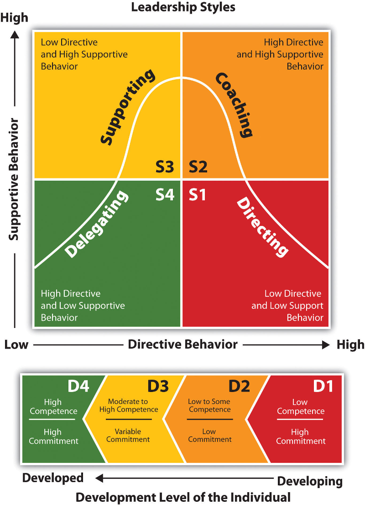

Tips for Team Leaders
If you’re guiding a team of people towards an end goal, you’re a team leader.
Team leaders are responsible for everything from day-to-day operations to ensuring that their team members are best supported to achieve their goals.
They provide guidance and instructions to a working group about a single or a portfolio of projects. They are in charge of delegating work, overseeing progress and coaching/mentorship team members as needed.
Team Leads responsibilities include:
- Organizing work
- Communication (give context)
- Delegating
- Leading by example
- Allocating and managing resources
- Problem solving
- Managing project progress and reporting to stakeholders
- Coaching to improve team member skill sets and identifying areas for improvement
- Motivating team members to accomplish their goals
- Representing and advocating for team needs
During transition from Dev to Tech-Lead be aware about your new duties and avoid these common errors:
- Writing code all the time - You have also coordination and management task to do for the team, not just coding
- Making all the technical decisions - Leave some challenges to your team, use their know-how
- Do not care about people - Be aware about personal issue and feelings
- Assume that team know what they are doing - Take some time to share scopes, goal, direction with all the team members
- Ignore arguments and conflicts - Do not avoid difficult conversations
Before accepting the role have a honest talk with the company management about what they expect from you (goals/duties) and what is your vision and your expectations.
At the end of the day, it’s about making good software with a team.
Eryn O’Neil
Be prepared
For this kind of role you'll need to develop some skills:
Context
Good team leaders provide context, so team members understand why their work matters and how their work fits into the larger company vision.
With that context, developers can more effectively prioritize tasks and ensure they deliver quality work at the right time.
Moving work forward
Once your team understands what goals they’re supporting, they also need a clear way to visualize how they’re going to get there.
Communication
Verbal and nonverbal communication (in fact, a lot of communication comes through body language and facial expressions).
Learn how to translate tech topics into real world example for non tech people.
Your are going to write a lot of reports and exchange info with business units, it's better to learn basic financial management (ask to your manager how their spreadsheets works).
Organization
Your team needs to be able to count on you and trust that you have everything under control.
Delegating
To delegate effectively, you must first understand each team member’s strengths, weaknesses, and interests.
Keep in mind that the team members may do things differently than you would have. Part of delegating is learning to let go and give your team members the reins.
At last: ”Trust, but verify”
Problem-Solving
If you’re new to problem solving, try answering the following questions:
How is the team going to approach the work?
What’s most important?
What do they have to focus on?
How will this decision impact the team?
Time management
Team leaders are masters on that, they have a great sense of how to prioritize work.
Be aware that context-switching is a proven drag on productivity.
Plan carefully your agenda and make sure to have some slot without meetings in order to do your stuff.
Workload management
You’re ultimately responsible for helping your team accomplish their goals.
Track progress and make sure no one is getting close to burnout.
Team building
Make sure everyone feels like part of the team, evaluate team performance and cheer your team members on.
Be honest, be fair, practice empathy.
Mentoring and coaching
A big part of a team leader’s role is to provide coaching, training, and mentoring where applicable.
Ask everytime for feedbacks but also give them. Identify communication channels and ways to promote these exchanges and growth.
Lead by example. Be the developer you wanna work with.
Mastering in three steps
Achieve tech lead mastery by:
-
Facilitate. Help your team do their jobs
- Remove roadblocks
- Perceive the need
- Know the answers or where to find them
-
Advocate. Keep the big picture in mind
- Advocate for your project: sometimes you have to say no
- Say no + always explain why
- Say no + but ... (if you are talking to managers)
-
Motivate. Guide your team to the best possible result
- Your attitude is important. When complaining you’re not finding a solution.
Remember that teams are not immutable: adding people in a team change cultural values, relationships, … it becames a new team. Think about it when hiring!
Also people who leave the team for a certain amount of time (sick leave, newborn, temporary moved …) modify the identity and roles inside.
Leadership styles
There are different way to lead a team, apply them carefully:

Errors and lessons learned
Process
Define and apply a process for your team. You’ll need:
- Excellent onboarding and documentation
- Ongoing internal training
- Frequent code reviews and coaching
- Comprehensive test suites
- Consistent style and quality guidelines
Keep track
Be open, discuss everything, have meetings… but always write down the facts and share it to eveyone involved (just in case when things go wrong).
Avoid the “Rockstar-Developers”
They become bottlenecks (when on holiday, away, assigned to another project…).
They create dependent teams (other members stop looking for answers/thinking and just wait the rockstart point of view)
They build knowledge silos (no shared information, full know-how to a single person)
They eventually leave... Every team member must be interchangeable on the roles, or at least with a lower impact on delivery.
Train junior developers
Create an onboard program to smooth the learning curve for new team members.
Follow these principles:
- Have a plan
- Spend time with the trainee (pair programming)
- Give clear, relevant feedbacks and share your experience
- Give opportunity to deliberate practice
Few more concepts
SMART
SMART allow you to write goals that are clear, attainable and meaningful.
Having clarity in your goal-setting provides the motivation and focus you need to be successful.
- Specific (simple, sensible, significant)
- Measurable (meaningful, motivating)
- Achievable (agreed, attainable)
- Relevant (reasonable, realistic and resourced, results-based)
- Time bound (time-based, time limited, time/cost limited, timely, time-sensitive)
The Google Project Aristotle
The researchers found (read) that what really mattered was less about who is on the team, and more about how the team worked together. In order of importance:
Psychological safety (video)
Team members feel safe to take risks and be vulnerable in front of each other
“If I make a mistake on our team, it is not held against me.”
Dependability
Team members get things done on time and meet Google’s high bar for excellence
“When my teammates say they’ll do something, they follow through with it.”
Structure and clarity Team members have clear roles, plans and goals “Our team has an effective decision-making process.”
Meaning
Work is personally important to team members
“The work I do for our team is meaningful to me.”
Impact
Team members think their work matters and creates change
“I understand how our team’s work contributes to the organization's goals.”
The researchers also discovered which variables were not significantly connected with team effectiveness at Google:
- Collocation of teammates (sitting together in the same office)
- Consensus-driven decision making
- Extroversion of team members
- Individual performance of team members
- Workload size
- Seniority
- Team size
- Tenure
It’s important to note though that while these variables did not significantly impact team effectiveness measurements at Google, that doesn’t mean they’re not important elsewhere.
The fundamental thing that distinguish good teams from disfunctional ones is how team mates treat one another.
Sandi Metz
Links and resources
10 things great team leaders do
Make the Right Thing the Easy Thing: Designing Processes Teams Will Actually Follow
Using Agile Techniques to Build a More Inclusive Team